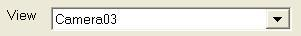
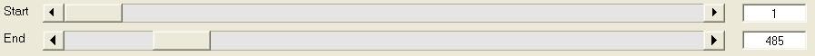
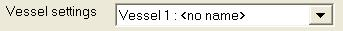
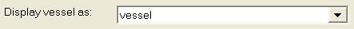
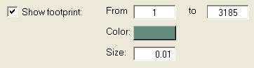
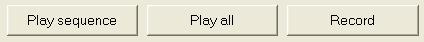

| Marine Visualization Toolbox | |
director
DIRECTOR Tool for creating 3d animations.
DIRECTOR(DATA, VRMLFILE) displays the VR world specified by VRMLFILE and opens a graphical user interface. By using TYPEDEF and CREATEVRML the properties of all vessels in VRMLFILE are ensured to be compatible with DATA.
Animation sequences are created by specifying time intervals, viewpoint and time varying vessel properties (translation, rotation and appearance). Animations may be viewed in the installed VRML viewer, or recorded as AVI files for Matlab independent playback.
See also: CREATEVRML, VERIFYDATA, TYPEDEF.
Author: Andreas Lund Danielsen
Date: 10th November 2003
Revisions:
Detailed information of fields and buttons in the director GUI:
Animations and sequences Animations consist of sequences, and each sequence consists of a time limitied set of
properties. Thus, all properties within the Edit sequence frame may be changed from one sequence to
another.
To add a sequence to your animation, press the pushbutton Add. The sequence is then added
to the list of sequences at the bottom of the screen. Change the sequences individual orders with the Up
and Down buttons, or remove a sequnence with Delete.
Viewpoints All viewpoints identified with the loaded VRML file are listed in this popupmenu. By
selecting a viewpoint the view changes in the displayed virtual world.
Note that viewpoints beginning with vessel follow the corresponding vessel's movements, other
viewpoints are fixed to the earth-fixed frame.

Timeline The timeline sliders enables you to scroll through the input 6 DOF data. Note that the displayed value
are sample numbers, not time values! These values determine for which time interval
the sequence is animated.
You may enter the desired sample number in the edit fields at the right end of the sliders.

Selecting vessels To change the sequence properties for a vessel, select a vessel in the popupmenu then
set the properties you would like. These properties will take affect immidiatley in the displayed world.
After adding the sequence to the animation, the properties will be saved with that specific sequence,
and take affect whenever it is played back or recorded.
Changes in vessel properties are saved automatically, even if you select another vessel.

Display vessels as... Vessels may be displayed as other 3D models than it's vessel type, for instance as it's body fixed axis.
Or the vessel may not displayed at all, not displaying all vessels can direct the focus to other vessels
of particular interest.
If two vessels are moving close to each other, for instance a reference vessel and a simulated vessel,
displaying them as body-fixed axis would give an indication of tracking quality.

Paths Paths are lines stretching from the selected vessel's first position, through all samples, to the
vessel's last sampled position. Line thickness is set by entering a number in Size (given
in meters, one centimeter in the above example).
The fields From and to determine for what sample range the path is visible. In the above
example, the path is visible from first sample to sample number 3185. In other words: while the vessel is
animated within this range, it will move along a line.
Instead of entering constant samples, you may enter t. Entering t in the From
field will produce a path in front of the vessel, from the vessel to some constant sample.
Entering t in the to field, will produce a path behind the vessel, from some
constant sample to the vessel.

Playback speed is the ratio of animation time versus sample time. Recall that sample time is given by the values in the time vector.
Imagine a time vector containing time values reaching from 0 seconds to 10 seconds (Note that the length of the time vector is irrelevant!), and a correspionding set of 6 DOF data.
 Play sequence plays back the selected sequence from the animation list.
Play sequence
Play all Play all plays back all the sequences from the animation list.
Record Record starts recording all the sequnces to file. You are asked to specify some
video options before the recording starts.
|
createvrml | euler2p | |